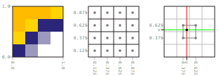
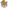
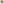
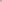
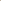
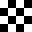

Texture parameters configure the sampling of texture pixels, a.k.a. texels.
The primary texture parameter is the filter mode. The filter mode determines how texels are magnified (stretched) or minified (compressed) during sampling.
Nearest filtering selects the texel nearest to the texture coordinate. This mode produces a pixelated magnification and a sparkly minification.
gl.texParameteri(gl.TEXTURE_2D, gl.TEXTURE_MAG_FILTER, gl.NEAREST)gl.texParameteri(gl.TEXTURE_2D, gl.TEXTURE_MIN_FILTER, gl.NEAREST)Texture coordinates range from 0 to 1. However, the exact coordinate of an individual texel is given by the location of its center. Consider a 4×4 image.
Linear filtering selects the four texels adjacent to the texture coordinate and linearly interpolates them. This produces a blurry magnification and a slightly less sparkly minification.
gl.texParameteri(gl.TEXTURE_2D, gl.TEXTURE_MAG_FILTER, gl.LINEAR)gl.texParameteri(gl.TEXTURE_2D, gl.TEXTURE_MIN_FILTER, gl.LINEAR)Mipmap filtering uses a set of two-by-two downsampled texture images.
|  |  |  |  |
These downsampled images may be generate automatically.
gl.generateMipmap(gl.TEXTURE_2D)
Mipmapping is only functional as a minification filter, and it reduces minification sparkling significantly.
gl.texParameteri(gl.TEXTURE_2D, gl.TEXTURE_MAG_FILTER, gl.LINEAR)gl.texParameteri(gl.TEXTURE_2D, gl.TEXTURE_MIN_FILTER, gl.LINEAR_MIPMAP_LINEAR)Texture parameters also determine how texture coordinates outside the range 0 to 1 behave. The following examples use a checkerboard texture.
It may be clamped.
gl.texParameteri(gl.TEXTURE_2D, gl.TEXTURE_WRAP_S, gl.CLAMP_TO_EDGE)gl.texParameteri(gl.TEXTURE_2D, gl.TEXTURE_WRAP_T, gl.CLAMP_TO_EDGE)Or it may be allowed to repeat. Repeat wrapping uses the fraction of the texture coordinate.
gl.texParameteri(gl.TEXTURE_2D, gl.TEXTURE_WRAP_S, gl.REPEAT)gl.texParameteri(gl.TEXTURE_2D, gl.TEXTURE_WRAP_T, gl.REPEAT)The filtering mode is very evident when a texture is viewed in perspective. Here is a nearest filtering. It is pixelated at all distances.
Here is a linear filtering. Note that the checkerboard is blurry up close and sparkly far away.
Finally, here is a mipmap filtering. Note that the checkerboard averages out to 50% gray in the distance, as would be expected.
This specific example uses mipmap filtering for minification and nearest filtering for magnification, which preserves the hard edges of the checkboard up close.